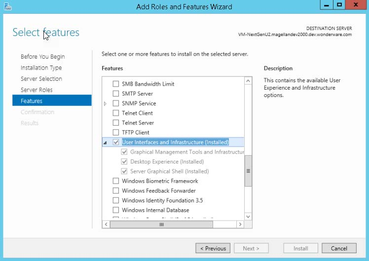
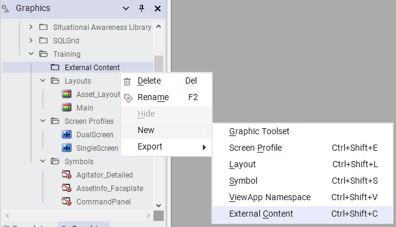
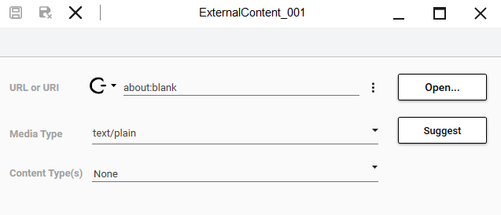
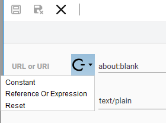
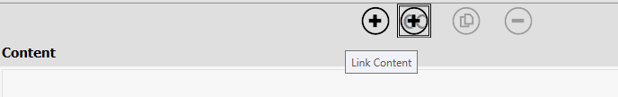
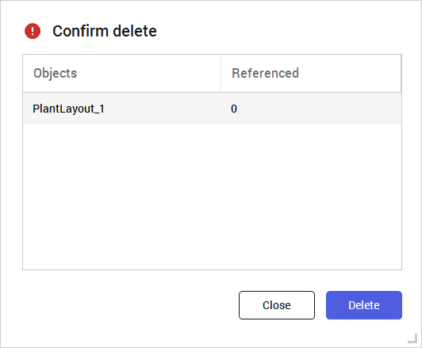

Module 5 — External Content | Pages 351-356
Section 1 – Introduction to External Content
AVEVA™ Operations Management Interface 2023
Section 1 – Introduction to External Content
Introduction
External content refers to media content outside of a Galaxy that can be linked to a ViewApp and
displayed during runtime. System Platform includes some pre-built Apps to show content specified
by external content items, such as web content, Microsoft Word documents, images, and more.
An external content item is created in the Graphics tab, and then configured with the External
Content Editor to identify the location of the external media and content types. External content
items are managed within the Graphics tab hierarchy of content items, which is visible in the
System Platform IDE and the Toolbox or Assets areas of the Layout and ViewApp Editors.
To associate external content to a ViewApp, you can manually assign the external content item to
a layout pane. You can also link an external content item to an automation object for auto-fill
navigation. A single external content item can be linked to multiple objects.
Media Files
Keep the following in mind for your media files:
If you are placing media files for the external content on a remote computer in your
network, ensure the connectivity between the computer where the ViewApp will run and
the computer where the remote media is stored.
If you are planning to specify the location of a media file for external content with a URI set
to a standard Windows mapped drive, it is important that the computer on which the
ViewApp is launched has the same drive letter mapped to the location having the
referenced content.
If you intend to show videos within a running ViewApp on a computer running a supported
version of Windows Server 2012, ensure the Desktop Experience feature is enabled.
Desktop Experience includes required media features that are not enabled by default on
the different versions of Windows Server 2012 supported by System Platform.
In later operating systems, installing the Full GUI includes the Desktop Experience and
support for showing videos within a running ViewApp.
This section introduces using external content in ViewApps, including how to create, configure,
and manage external content items.

Module 5 – External Content
AVEVA™ Training
Create External Content Items
You create external content items in the Graphics tab in the System Platform IDE. From the
Graphics tab, right-click the Galaxy name or a toolset name and select New | External Content.
The following shows creating a new external content item in a toolset named Training.
The external content item appears in the Graphics tab with an identifying icon. It is created with a
default name of ExternalContent_001 for the first external content item, but you can rename it.
Once the external content item is created, you can configure it in the External Content Editor.
the location of the external media, the type of media, and the content types of the layout pane that
can host the external content.
External Content Editor
You configure external content items in the External Content Editor. From the Graphics tab,
double-click the external content item to open it in the editor.
URL or URI: The location of an external media item using a standard format. Can be
specified as either a static string or an expression/reference.


Section 1 – Introduction to External Content
AVEVA™ Operations Management Interface 2023
The Mode icon on the left of the field provides options to select Constant or Reference Or
Expression to set the mode for the field. Click the down-arrow to display the drop-down
list.
If set to Constant, an ellipsis to the right of the field provides options to browse for an
external media file and to specify a URL using HTTP or HTTPs. If set to Reference Or
Expression, an ellipsis to the right of the field opens the Galaxy Browser that can be used
to select references. You can build a custom expression to specify the location of the
media file.
Open: If the mode for the URL or URI field is Constant, the Open button validates the
location of external media specified in the URL or URI field. An attempt is made to display
the external media in an application assigned as the default by the operating system, not
the App specified for the external content media type. A warning appears if the external
media cannot be found at the location specified in the URL or URI field.
If the mode for the URL or URI field is Expression Or Reference, the Open button is
disabled.
Media Type: A two-part identifier that specifies the type of application required to process
or view the media item. A media type can be entered in the field or selected from a drop-
down list. Available media types are listed in the drop-down list in bold text. If an
unavailable media type is entered or selected, the external content may not display
properly in the running ViewApp.
Suggest: If the mode for the URL or URI field is Constant, the Suggest button selects a
media type based on the entry in the URL or URI field. The entered value can be changed
if the suggestion does not match the expected media type.
If the mode for the URL or URI field is Expression Or Reference, the Suggest button is
disabled.
Content Type(s): Content type(s) of the external media item. The content types specified
for the external media must match with the content types configured for the layout panes
that will show the external media at runtime.

Module 5 – External Content
AVEVA™ Training
Out-of-the-Box Viewer OMI Apps
Out-of-the-box Apps for viewing external content include the WebBrowser control, which provides
a full-featured, standards-complaint web browser to the ViewApp, as well as the following:
DocViewerApp shows a Microsoft Word document within a pane of a running ViewApp. It
initially shows the first page of the document at 100 percent zoom scale. It includes a set
of visual controls for zooming the display of the document or searching the content. No
permanent editing changes can be made to the Word document from within the
DocViewerApp.
ImageViewerApp shows an image within a pane of a running ViewApp. It includes a set
of visual controls for zooming, flipping, or rotating the display of the image. No permanent
editing changes can be made to the image from within the ImageViewerApp.
PDFViewerApp shows a Portable Document Format (PDF) document within a pane of a
running ViewApp. It initially shows the first page of the document at 100 percent zoom
scale. It includes a set of visual controls for zooming, searching the content, paging
through the document, rotating the document, or changing the number of pages displayed.
No permanent editing changes can be made to the PDF document from within the
PDFViewerApp.
SpreadsheetViewerApp shows a Microsoft Excel spreadsheet within a pane of a running
ViewApp. It initially shows the first worksheet of the spreadsheet at 100 percent zoom
scale. It includes a set of visual controls for zooming the content. No permanent editing
changes can be made to the spreadsheet from within the SpreadsheetViewerApp.
External Content in Automation Objects
You can link an external content item to an automation object for auto-fill navigation. A single
external content item can be linked to multiple objects.
When editing an object in the Object Editor, you can link an external content item to the object from
the Content pane on the Attributes tab. Clicking the Link Content button opens the Galaxy
Browser, allowing you to navigate to the location where the external content is stored and select
the media file.

Section 1 – Introduction to External Content
AVEVA™ Operations Management Interface 2023
Delete an External Content Item
You can delete an external content item from the Graphics tab by right-clicking the external
content item and selecting Delete. The Confirm delete dialog box appears, listing any references
to the external content item and allowing you to confirm or cancel the deletion.
Import and Export External Content Items
An external content item in a Galaxy can be managed from the Graphics tab using standard
options from the right-click shortcut menu or from the Edit options of the System Platform IDE
menu bar. For example, you can right-click an external content item in the Graphics tab and select
from the shortcut menu.
A ViewApp containing Apps designed to display external content can be exported from one Galaxy
and imported to another Galaxy. The External Content Editor is capable of recognizing a new
media type from the imported App.
An external content item can be:
Exported to an aaPKG file
Imported from an aaPKG file
Included in a Galaxy backup
Restored from a Galaxy backup
Included in an export of layouts or ViewApps that have external content items associated
with them

Module 5 – External Content
AVEVA™ Training
Review above.